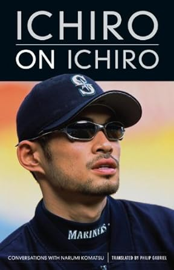
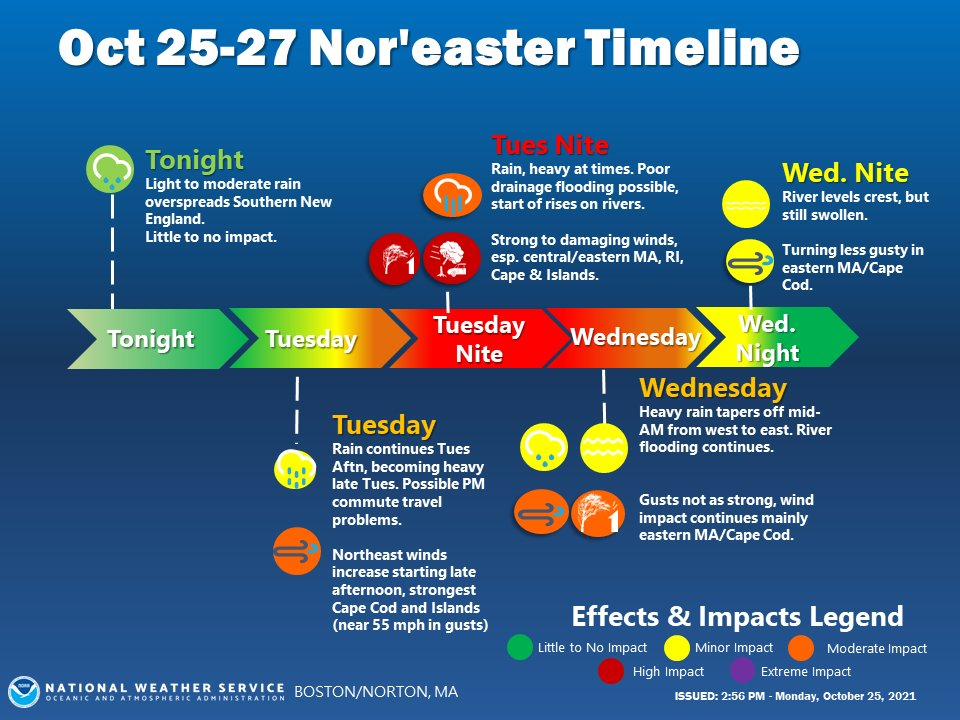

Project 2 | Timeline
Research Assignment
- Who is your favorite artist? Why?
I don't really have a favorite artist necessarily, but I do enjoy Georges Seurat's Pointillism painting style. The act of using just dots to create an image is a unique stylistic choice that creates some cool abstract paintings.
- Who is your favorite author? Why?
Brandon Mull. His "Five Kingdoms" series was my introduction to the Fantasy genre as a kid, and it remains one of my favorite book series to this day.
- If you could read only one biography right now, what would it be? Find an image of the cover of this biography and place it in this webpage using the image tag.

- Write your own biography in ten chronological sentences.
- I was born in the year 2004.
- I grew up in Suffolk, Virginia and have lived there my whole life up to this point.
- I played on various baseball teams from the age of 6, all the way up until I turned 19.
- My parents allowed me to pick out my first dog when I was at the age of 7. He was a good boy for a little over 8 years before sadly passing away due to cancer in late 2020.
- My father showed me how to use a computer at the age of 8, a decision that allowed me to become proficient in technology for years to come.
- I was homeschooled since 4th grade after having issues with the public school system.
- I made the decision to pursue a Graphic Design degree at TCC when I was 16 after learning the ins and outs of Adobe Photoshop.
- I graduated from high school in 2022.
- I started taking college classes in Fall of 2022.
- Now, in 2024, I am approaching the end of my Associates degree and will hopefully have a full time Graphic Design career at some point later this year.
- View the following timeline websites and place a screen shot of your favorite in this web page using the image tag. Explain your choice.
.png)
I'm a big fan of the retro video game visual aesthetic, and this timeline incorporates it quite well. There's a bit of personality to it as well, which I love.
- Find an example of a timeline that you think is designed well and place it in this webpage using the image tag.

- Name two historical events that interest you.
The Renaissance Period and the Protestant Reformation.
- If you had to do a research paper about a scientific phenomena, what would the topic be?
Everything about the idea of manifestation is intriguing to me. It's not scientifically proven, but there is strong speculation that it may be possible.
- What do you believe is the most important invention or discovery to date? Why?

Technology. So many aspects of our lives have been improved by this discovery. Things such as air conditioning, lightbulbs, and kitchen appliances provide us with better shelter. Vehicles allow us to travel long distances in a relatively short period. Lastly, devices such as computers, cell phones, and TVs are luxuries that make our day to day lives easier and more enjoyable.
- Name an event that you think changed the world for better. How about for the worse?
In a way, I feel like the recent Covid pandemic of 2020 can apply for both of these questions. Being in lockdown led to many discoveries that are still helpful to us even now as life has gone back to normal. Remote jobs and online education became mainstream and gave us a wider variety of options for our career and education. It also showed us the importance of mental health, and introduced more ways to seek help for those who are struggling. There are even little things, such as curbside pickup at a restaraunt, that make our days just a little bit easier and more convienient.
Of course the pandemic had many downsides as well, outside of the obvious fact that millions have died from the virus itself. The biggest thing I've noticed is the rise of conspiracy theories about the government and our healthcare system. I've noticed that this has led to a serious divide in our country, and nothing can be brought up anymore without the risk of starting a controversial argument, especially when it comes to things like politics. Another big downside of Covid was the amount of small businesses that had to shut down due due to the lack of customers during a period where we weren't allowed to leave our houses often. While small businesses are still a thing, it is still a shame that so many went out of business due to something completely out of their control. The last thing I've noticed is that people have just stopped caring about what they look or smell like. The average Walmart will easily have 2-3 people wearing their PJ's like they just got out of bed. Now, I'm not saying you should spend 3 hours doing makeup for a trip to the grocery store, but what happened to putting on some decent clothes?